Vecka 41 · Del 3 av 3
Del 3: Fysisk träff och mätning
1 Översikt
Det här ska du kunna
- Koppla Y och Δ i en motors plint och kontrollera kopplingen med mätning.
- Känna igen motorns och startarens delar och förklara vad en strömtång mäter.
Fundera först: Motorn har sex plintar. Hur tar du reda på vilka två som hör till samma lindning? Svaret finns i teorin nedan.
Så gör du
- Läs teorin ett avsnitt i taget (7 korta avsnitt). Sist i varje avsnitt står vilka övningar du kan göra direkt.
- Följ exemplen med papper och räknare, steg för steg. Gissa nästa steg innan du läser det.
- Gör övningarna 3.1–3.10. Fastnar du: Ledtråd 1 visar vilket samband du behöver och var i teorin det förklaras. Ledtråd 2 visar hur du börjar och Ledtråd 3 exemplet som räknar samma sorts uppgift med andra tal. Öppna facit när du har ett eget svar.
- Lämna in veckans uppgifter: Veckans inlämning.
Så skriver du en lösning som går att följa
1. Givet och sökt
Skriv av värden, enheter och vad du ska bestämma.
2. Samband och villkor
Välj formel eller princip. Kontrollera koppling, driftfall och antaganden.
3. Uträkning och kontroll
Omvandla enheter, sätt in värden och tolka resultatet.
I resonemangsfall: koppla observation till en motiverad slutsats.
Lärarens presentation · PDF · Räknarhjälp · Formelblad
Förkortningar och beteckningar i den här delen (5)
- R
- resistans. Resistorns motstånd mot ström. Beror inte på frekvensen. Enhet: Ω (ohm).
- DC
- likström, likspänning (engelska: direct current). Ström eller spänning med samma riktning hela tiden, till exempel från ett batteri. På multimetern V⎓ eller DC.
- cos φ
- cosinus fi. Cosinus av fasvinkeln mellan spänning och ström. För ren sinus är cos φ = PF, därför står cos φ ofta på motorernas märkskylt.
- φ
- fasvinkel (fi). Hur mycket en kurva ligger före eller efter en annan, i grader. Mellan spänning och ström: positiv φ betyder att strömmen släpar (induktiv last). Enhet: °.
- Hz
- hertz. Enheten för frekvens: 1 Hz är en period per sekund. Elnätet ombord är ofta 50 eller 60 Hz. 1 kHz = 1 000 Hz.
2 Teori
Ett avsnitt i taget: öppna det, läs, och gör sedan övningarna som står sist i avsnittet. Formeln bredvid rubriken är det viktigaste i avsnittet.
1Labbets ramar
Motorn och startaren är övningsobjekt. De ansluts aldrig till nätet.
Blecken flyttas med mätsladdarna bortkopplade.
Tångstationen matas av ett strömbegränsat DC-aggregat på skyddsklenspänning.
Förutsäg först, mät sedan, jämför och förklara skillnaden.
2Motorns delar och märkskyltMärkskylten avgör kopplingen
Statorn sitter i stommen. Rotorn på axeln bärs av lager.
Fläkten kyler genom flänsarna.
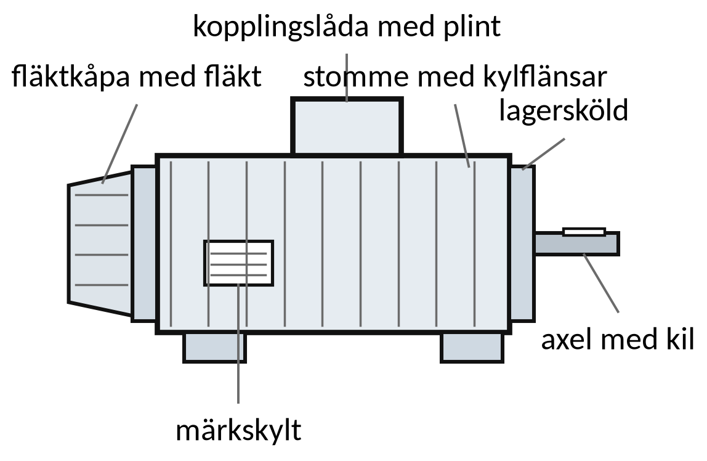
Märkskylten avgör kopplingen
Skylten anger effekt, Δ/Y-spänning, ström, cos φ, varvtal och frekvens.
Ombord ofta 440 V, 60 Hz: kontrollera skylten.
Öva nu: Övning 3.4
3Lindningar och plintRU1–U2 ≈ RV1–V2 ≈ RW1–W2
Tre lindningar: U1–U2, V1–V2 och W1–W2.
Utan bleck är lindningarna skilda åt.
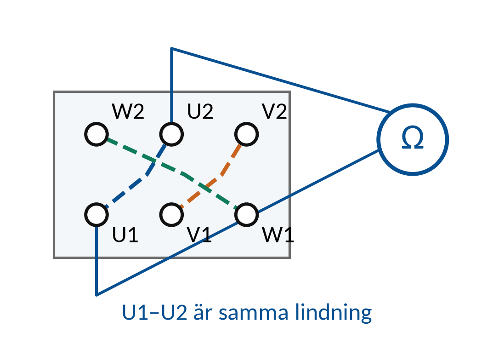
RU1–U2 ≈ RV1–V2 ≈ RW1–W2
Mellan två olika lindningar visar mätaren överområde.
Dra av mätsladdarnas resistans: en lindning har bara några ohm.
Öva nu: Övning 3.2
4Y och Δ med bleckY: 2R Δ: (2/3) · R
Y: blecken förbinder W2, U2 och V2. Det är stjärnpunkten.
Δ: tre lodräta bleck, U1–W2, V1–U2 och W1–V2.
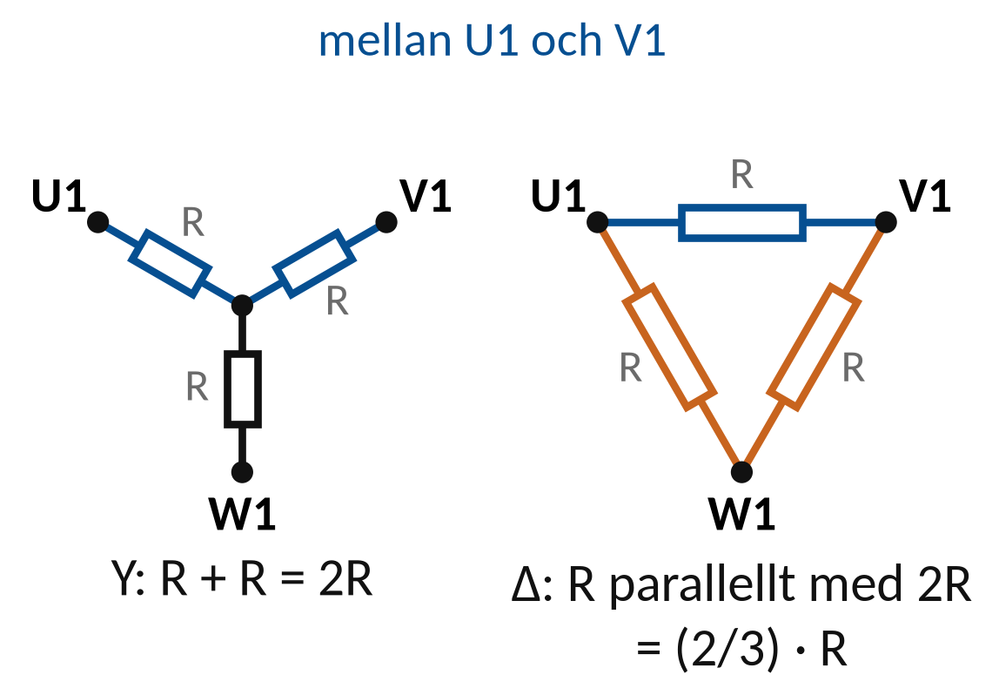
Y: 2R Δ: (2/3) · R
Resistansen mellan två plintar kontrollerar kopplingen.
Kvoten RY/RΔ = 3, samma tal som strömmarna i Del 2.
Öva nu: Övning 3.1, Övning 3.3, Övning 3.5, Övning 3.6
5Startarens delarÖverlastreläet ställs på motorns märkström
Kontaktorn K1 kopplar motorns tre faser med huvudkontakterna. Spolen A1–A2 drar den.
13–14 är normalt öppen. 95–96 på överlastreläet är normalt sluten.
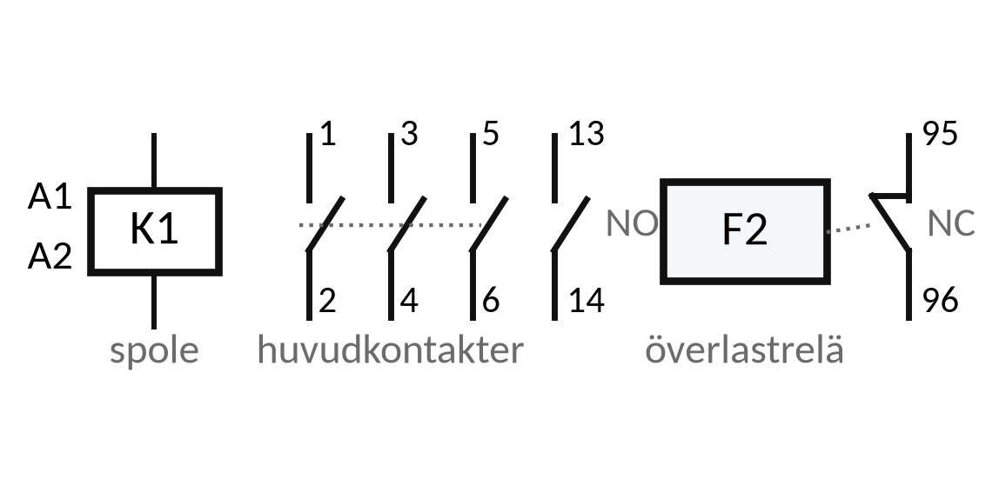
Överlastreläet ställs på motorns märkström
Startaren ansluts aldrig i labbet. Kontakterna mäts spänningslöst.
Hållkretsen kommer tillbaka vecka 43.
Öva nu: Övning 3.7, Övning 3.8
6StrömtångenTvå varv: 2 · I
Tången mäter summan av strömmarna som går genom käften.
Nollställ tången i läget DC A före mätningen.
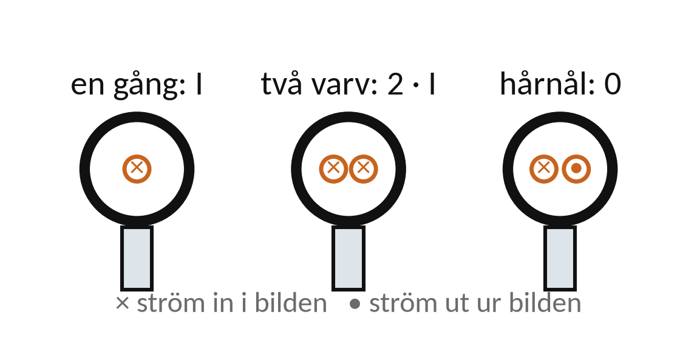
Två varv: 2 · I
Ut och tillbaka: 0
Mät en fasledare i taget. Runt en hel trefaskabel blir summan nära noll.
Samma princip används i jordfelsbrytaren.
Öva nu: Övning 3.9, Övning 3.10
7Protokoll och slutsatsAvvikelse = uppmätt − förväntat
Varje deltagare skriver ett eget protokoll: mätpunkter, instrument och värden.
Det förväntade värdet står i protokollet före mätningen.
Avvikelse = uppmätt − förväntat
Observation: ”U1–V1 visar 2R i Y”. Slutsats: ”blecken ligger rätt”.
Håll isär observation och slutsats.
3 Exempel
Följ exemplet steg för steg med papper och räknare. Försök själv med nästa steg innan du läser det. Övningarna använder samma metod med andra tal.
E1Resistansen mellan plintarna
Tre lindningar mäts till 6,0 Ω var, med mätsladdarna avdragna. Förutsäg resistansen mellan U1 och V1 i Y och i Δ.
RY = 2R RΔ = R · 2R/(3R)
- Y: två lindningar i serie: 2 · 6,0 = 12,0 Ω.
- Δ: 6,0 Ω parallellt med 12,0 Ω: 6,0 · 12,0/18,0 = 4,0 Ω.
- Kvoten: 12,0/4,0 = 3.
Kontroll: kvoten blir 3 för alla R. Ett annat tal tyder på ett fel bleck eller en fel mätpunkt.
E2Strömtången med flera varv
Ett aggregat driver 1,5 A genom en labbsladd. Sladden läggs tre varv genom tången och sedan som en hårnål.
Visat värde = summan av strömmarna genom käften
- En gång genom käften: 1,5 A.
- Tre varv: 3 · 1,5 = 4,5 A.
- Hårnål: +1,5 − 1,5 = 0 A.
Kontroll: tången räknar varje passage genom käften, med riktning.
4 Övningar
Räkna på papper. Bocka av en övning när du har kontrollerat ditt svar mot facit. Avbockningen sparas i den här webbläsaren.
Övning 3.1: Blecken för fartygets nät
En motor ombord har märkskylten Δ/Y 254/440 V, 60 Hz. Fartygets nät ger 440 V mellan faserna. Vilken koppling ska motorn ha, och hur lägger du blecken i plinten?
Givet: Ombord, 60 Hz. Märkskylt Δ/Y 254/440 V. Nätets linjespänning 440 V. Plintens övre rad är W2, U2, V2 och den undre U1, V1, W1.
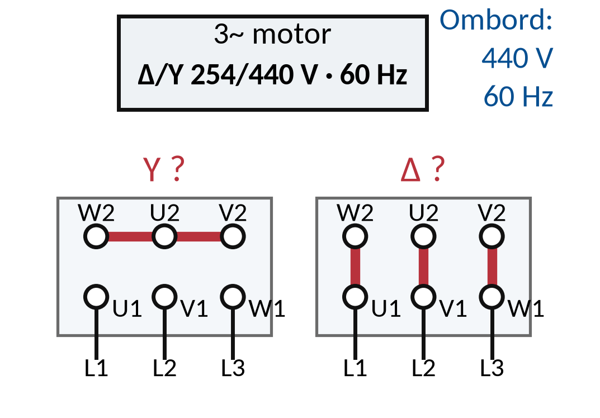
Ledtråd 1: vilken princip?
Utgå från Nätets UL = märkvärdet för driftkopplingen. Läs Teori 4: Y och Δ med bleck.
Ledtråd 2: hur börjar jag?
Märkningen Δ/Y anger två linjespänningar: den lägre hör till Δ och den högre till Y. Jämför nätets linjespänning med de två märkvärdena. Beskriv sedan var blecken ska ligga för den kopplingen.
Ledtråd 3: steg för steg
1) Skriv upp vilken spänning som hör till Δ och vilken som hör till Y. 2) Hitta det märkvärde som är lika med nätets linjespänning. 3) Beskriv blecken: Y förbinder den övre raden till en stjärnpunkt, Δ har tre lodräta bleck. Annat fall: en motor märkt Δ/Y 230/400 V på ett nät med 230 V mellan faserna. Pröva båda kopplingarna där.
Räknaren i RAD: när vinkeln kommer från 2π · f · t
I u(t) = û · sin(2π · f · t) är 2π · f · t en vinkel i radianer. Räknaren ska stå i RAD.
Kontrollera: räkna sin(π/2). Blir svaret 1 står räknaren rätt. Blir det 0,0274 står den i DEG.
Ställ om: Casio: tryck SHIFT och sedan Mode eller Menu (inställningar), välj vinkelenhet Rad. TI-30X: tryck Mode och välj Rad. Telefonen: vrid den på tvären och tryck Rad. I fönstret står då ett litet R eller Rad.
Regel: står det π eller 2π · f · t i vinkeln, använd RAD. Ställ tillbaka till DEG efteråt.
Varför radianer? Se filmen Radianer och grader (2 min).
Facit
Y. Nätets 440 V är lika med det högre märkvärdet, som hör till Y. Blecken läggs längs den övre raden så att W2, U2 och V2 förbinds till en stjärnpunkt. Varje lindning får då 440/√3 ≈ 254 V, som är lindningens märkspänning.
Övning 3.2: Lindningarna utan bleck
Sladdarna visar 0,3 Ω mot varandra. Utan bleck: U1–U2 4,1 Ω, V1–V2 4,0 Ω och W1–W2 4,2 Ω. Beräkna varje lindnings resistans och medelvärdet.
Givet: Spänningslös motor som aldrig är ansluten. Blecken borttagna. Sladdarnas resistans 0,3 Ω.
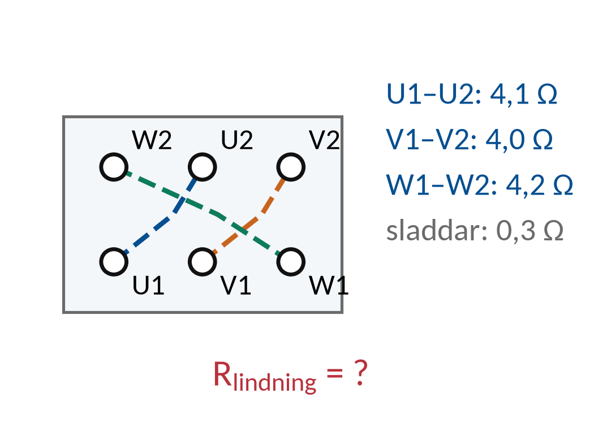
Ledtråd 1: vilket samband?
Använd Rlindning = Ravläst − Rsladdar. Läs Teori 3: Lindningar och plint.
Ledtråd 2: hur börjar jag?
Mätsladdarna ligger i serie med lindningen. Multimetern visar summan. Dra av sladdarnas resistans från varje avläsning. Lägg sedan ihop de tre lindningarna och dela med tre.
Ledtråd 3: steg för steg med andra tal
1) Dra av sladdarnas resistans från varje avläst värde. 2) Medelvärdet är summan delad med antalet. Exempel med andra tal: sladdar 0,2 Ω och avläst 5,4 Ω ger en lindning på 5,2 Ω. Rimlighet: tre lindningar i samma motor ska ligga nära varandra.
Facit
U1–U2: 4,1 − 0,3 = 3,8 Ω. V1–V2: 4,0 − 0,3 = 3,7 Ω. W1–W2: 4,2 − 0,3 = 3,9 Ω. Medelvärde (3,8 + 3,7 + 3,9)/3 = 3,8 Ω.
Svar: Rlindning ≈ 3,8 Ω
Övning 3.3: Förutsäg Y och Δ
En lindning har resistansen 3,6 Ω. Förutsäg resistansen mellan U1 och V1 när blecken ligger för Y och när de ligger för Δ.
Givet: Tre lika lindningar på 3,6 Ω. Mätsladdarnas resistans är redan avdragen.
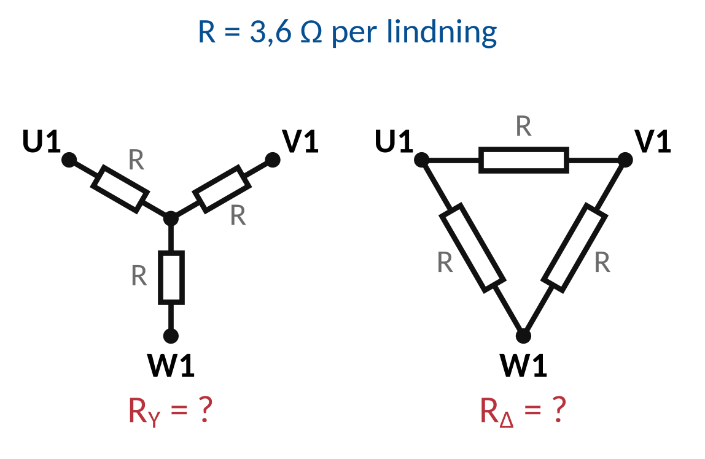
Ledtråd 1: vilket samband?
Använd Y: RY = 2 · Rlindning och Δ: RΔ = (2/3) · Rlindning. Läs Teori 4: Y och Δ med bleck.
Ledtråd 2: hur börjar jag?
I Y går vägen mellan två plintar genom två lindningar. I Δ ligger en lindning parallellt med två lindningar i serie. Räkna serie för Y. För Δ: räkna först de två lindningarna i serie och sedan parallellt med den tredje.
Ledtråd 3: steg för steg med andra tal
1) Y: lägg ihop två lindningar. 2) Δ: parallellkoppling av R och 2R ger R · 2R/(R + 2R). 3) Jämför: kvoten mellan Y och Δ ska bli 3. Exempel med andra tal: en lindning på 4,5 Ω ger 9,0 Ω i Y och 3,0 Ω i Δ.
Facit
Y: 2 · 3,6 = 7,2 Ω. Δ: 3,6 · 7,2/(3,6 + 7,2) = 2,4 Ω. Kvoten 7,2/2,4 = 3.
Svar: RY ≈ 7,2 Ω · RΔ ≈ 2,4 Ω
Övning 3.4: Motorns delar
Vilken del av motorn öppnar du för att koppla Y eller Δ, och vilka uppgifter på märkskylten avgör kopplingen? Vad gör fläkten och lagersköldarna?
Givet: Motorn har stomme med kylflänsar, fläktkåpa, lagersköldar, kopplingslåda och märkskylt. Den är aldrig ansluten.
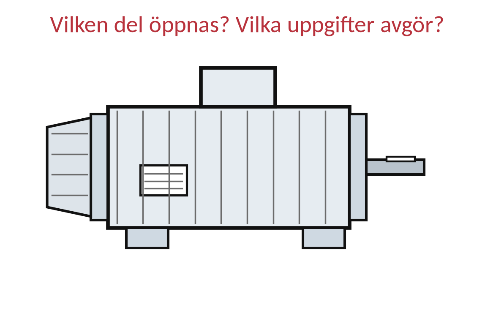
Ledtråd 1: vilken princip?
Utgå från Märkskylten avgör kopplingen. Läs Teori 2: Motorns delar och märkskylt.
Ledtråd 2: hur börjar jag?
Lindningsändarna sitter i plinten. Märkskylten anger spänning, ström, frekvens och effekt. Leta upp var lindningsändarna finns och vilken rad på skylten som anger två spänningar med Δ och Y.
Ledtråd 3: steg för steg
1) Var sitter plinten? 2) Vilken rad på skylten har Δ och Y? 3) Vad behöver motorn för att inte bli för varm, och vad bär axeln? Samma sätt att resonera som vid startaren: börja med vad delen gör.
Facit
Kopplingslådan (plintlådan) öppnas: där sitter plinten med de sex lindningsändarna och blecken. Kopplingen avgörs av skyltens spänningar för Δ och Y jämförda med nätets linjespänning, och av att frekvensen på skylten stämmer med nätet. Fläkten på axeln kyler motorn genom flänsarna. Lagersköldarna bär lagren som håller rotorn.
Övning 3.5: Kvoten mellan Y och Δ
I labbet mättes U1–V1 till 8,1 Ω i Y och 2,8 Ω i Δ (sladdarna avdragna). Beräkna kvoten RY/RΔ och avvikelsen från 3 i procent. Låg blecken rätt?
Givet: Samma motor, samma par U1–V1. Förväntad kvot 3.
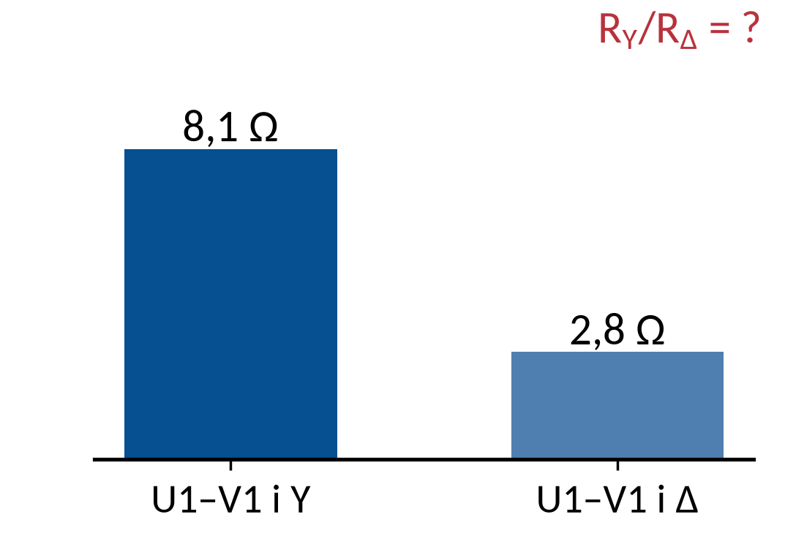
Ledtråd 1: vilket samband?
Använd Kvot = RY/RΔ och Avvikelse i % = 100 · (kvot − 3)/3. Läs Teori 4: Y och Δ med bleck.
Ledtråd 2: hur börjar jag?
Kvoten 3 gäller oavsett lindningens resistans, eftersom RY = 2R och RΔ = (2/3)R. Dela Y-värdet med Δ-värdet, jämför med 3 och räkna avvikelsen i procent.
Ledtråd 3: steg för steg med andra tal
1) Kvoten: dela Y-värdet med Δ-värdet. 2) Avvikelse: skillnaden mot 3, delad med 3, gånger 100. 3) Ett par procent kan komma från avläsning och sladdar. Ett helt annat tal tyder på ett fel. Exempel med andra tal: 10,2 Ω och 3,4 Ω ger kvoten 3,0 och avvikelsen 0 %.
Facit
Kvot = 8,1/2,8 ≈ 2,89. Avvikelse = 100 · (2,89 − 3)/3 ≈ −3,6 %. Kvoten ligger nära 3, så blecken låg rätt. Skillnaden kan komma från avläsningen och sladdarnas resistans, som påverkar det lilla Δ-värdet mest.
Svar: RY/RΔ ≈ 2,89
Övning 3.6: Ett bleck som saknas
Blecken ska ligga för Δ. Du mäter U1–V1 = 4,2 Ω, V1–W1 = 4,2 Ω och W1–U1 = 8,4 Ω. En lindning har resistansen 4,2 Ω. Vad visar mätningen, och vilket bleck saknas?
Givet: Spänningslös motor. Sladdarnas resistans avdragen. Δ-blecken ska vara U1–W2, V1–U2 och W1–V2.
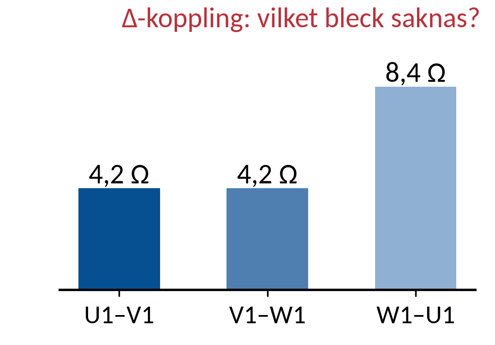
Ledtråd 1: vilken princip?
Utgå från Δ: alla par (2/3) · Rlindning. Läs Teori 4: Y och Δ med bleck.
Ledtråd 2: hur börjar jag?
I en hel Δ-koppling visar alla tre paren samma värde. Två par med en lindning och ett par med två lindningar i serie betyder att triangeln är öppen. Räkna först vad en hel Δ skulle ge. Rita sedan triangeln och ta bort ett bleck i taget tills mätvärdena stämmer.
Ledtråd 3: steg för steg
1) Räkna (2/3) · R för en hel Δ och jämför med mätvärdena. 2) Rita lindningarna U, V och W med blecken. 3) Pröva: vilket bleck gör att vägen mellan W1 och U1 bara går genom två lindningar? Samma sätt att resonera: en felsökning jämför förväntat och uppmätt i varje punkt.
Facit
En hel Δ skulle ge (2/3) · 4,2 = 2,8 Ω mellan alla par. Här visar två par en lindning (4,2 Ω) och W1–U1 två lindningar i serie (8,4 Ω). Triangeln är öppen: blecket U1–W2 saknas. Då går vägen U1–U2–V1–V2–W1 genom lindningarna U och V, och lindningen W hänger bara i W1.
Övning 3.7: Startarens kontakter
Spänningslöst visar 13–14 överområde och 95–96 0,1 Ω. Vad betyder värdena? Vad visar 95–96 efter överlastreläets testknapp, och varför?
Givet: Startaren är ett övningsobjekt och är aldrig ansluten. Kontaktorn är opåverkad.
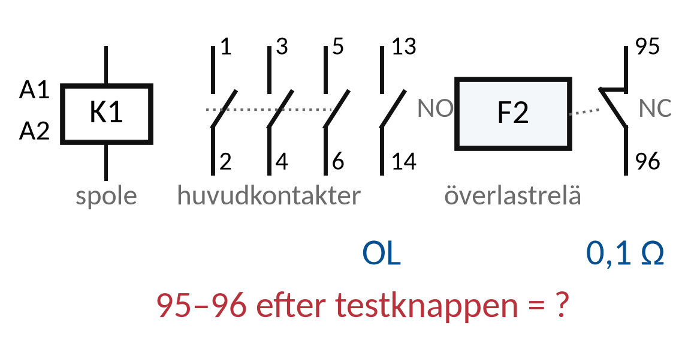
Ledtråd 1: vilken princip?
Utgå från NO: öppen i vila. NC: sluten i vila. Läs Teori 5: Startarens delar.
Ledtråd 2: hur börjar jag?
13–14 är kontaktorns hjälpkontakt. 95–96 sitter på överlastreläet. Bestäm om varje kontakt är normalt öppen eller normalt sluten, och vad testknappen gör med överlastreläet.
Ledtråd 3: steg för steg
1) Överområde betyder ingen förbindelse, nästan 0 Ω betyder sluten kontakt. 2) Vilken kontakt är NO och vilken NC? 3) Testknappen gör samma sak som en överlast. Samma sätt att resonera som för STOPP och START i hållkretsen.
Facit
13–14 är en normalt öppen hjälpkontakt (NO): öppen när kontaktorn är opåverkad. 95–96 är överlastreläets normalt slutna kontakt (NC). Testknappen löser ut reläet som vid en överlast. Då öppnar 95–96 och mätaren visar överområde tills reläet återställs. I en ansluten krets bryter 95–96 då matningen till spolen och kontaktorn släpper.
Övning 3.8: Koppling och överlastrelä
Märkskylten anger Δ/Y 230/400 V och 5,9/3,4 A, 1,5 kW, 50 Hz. Motorn ska gå på landnätet 400 V i verkstaden. Vilken koppling ska den ha, och på vilken ström ställs överlastreläet?
Givet: Landnät 400 V, 50 Hz. Märkskylt Δ/Y 230/400 V, 5,9/3,4 A, 1,5 kW.
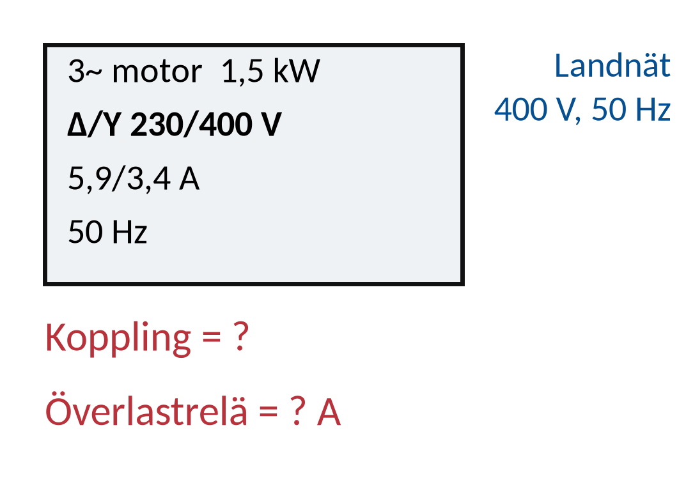
Ledtråd 1: vilket samband?
Använd Nätets UL = märkvärdet för driftkopplingen och Överlastreläet ställs på märkströmmen för kopplingen. Läs Teori 5: Startarens delar.
Ledtråd 2: hur börjar jag?
Skylten ger strömmen för varje koppling i samma ordning som spänningarna: Δ först, sedan Y. Välj koppling från spänningarna och läs sedan strömmen för den kopplingen.
Ledtråd 3: steg för steg med andra tal
1) Vilket märkvärde är lika med nätets linjespänning? 2) Strömmen står på samma plats efter snedstrecket. 3) Rimlighet: Δ-strömmen är √3 gånger Y-strömmen. Exempel med andra tal: ombord 440 V och skylten Δ/Y 440/760 V, 2,9/1,7 A ger Δ och 2,9 A.
Facit
Y, eftersom nätets 400 V är lika med det högre märkvärdet. Märkströmmen för Y är 3,4 A, så överlastreläet ställs på 3,4 A. Kontroll: 5,9/3,4 ≈ 1,73 = √3.
Svar: I ≈ 3,4 A
Övning 3.9: Tången med flera varv
Ett DC-aggregat driver 1,8 A genom en labbsladd. Vad visar tången med sladden två varv genom käften, och med sladden vikt som en hårnål?
Givet: Tångstationen på skyddsklenspänning. Tången nollställd i läget DC A. Strömmen 1,8 A.
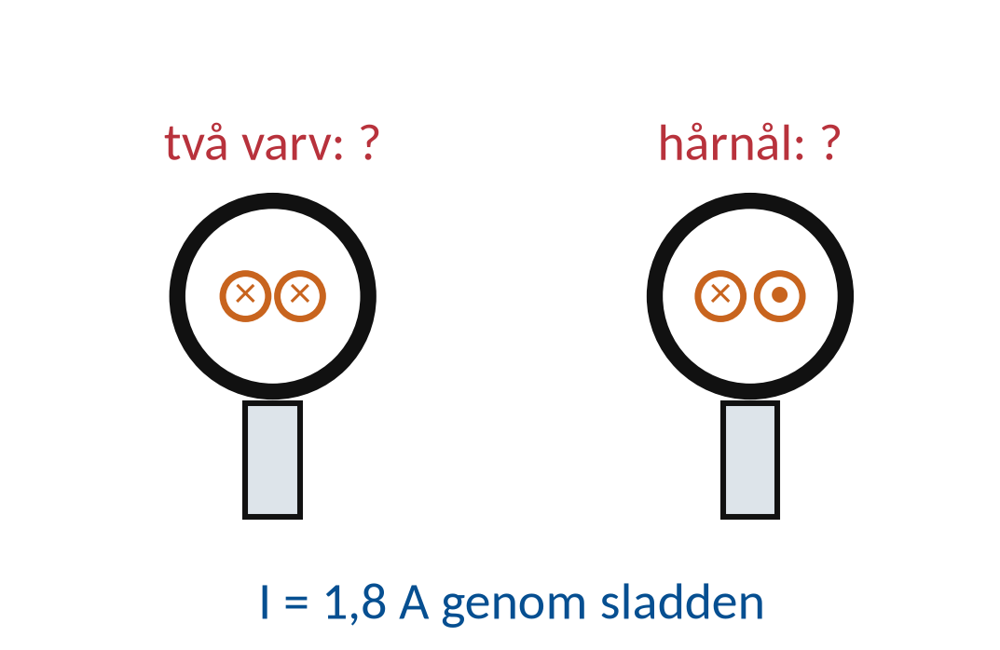
Ledtråd 1: vilket samband?
Använd Tången visar summan av strömmarna genom käften. Läs Teori 6: Strömtången.
Ledtråd 2: hur börjar jag?
Varje gång sladden passerar käften räknas strömmen en gång, med sin riktning. Räkna hur många gånger strömmen passerar käften och åt vilket håll.
Ledtråd 3: steg för steg med andra tal
1) Två varv: samma ström passerar käften två gånger åt samma håll. 2) Hårnål: strömmen passerar en gång åt varje håll. Exempel med andra tal: 0,8 A och fyra varv ger 4 · 0,8 = 3,2 A.
Facit
Två varv: 2 · 1,8 = 3,6 A. Hårnål: +1,8 − 1,8 = 0 A, eftersom strömmen går genom käften en gång åt varje håll.
Svar: I ≈ 3,6 A
Övning 3.10: Tången runt motorkabeln
En motorman lägger tången runt hela kabeln till en trefasmotor ombord medan den går, och läser 0,2 A. Förklara varför värdet är så litet, och hur fasströmmen ska mätas.
Givet: Ombord, 440 V, 60 Hz. Trefasmotor utan neutralledare. Tången är avsedd för mätningen och mätkategorin.
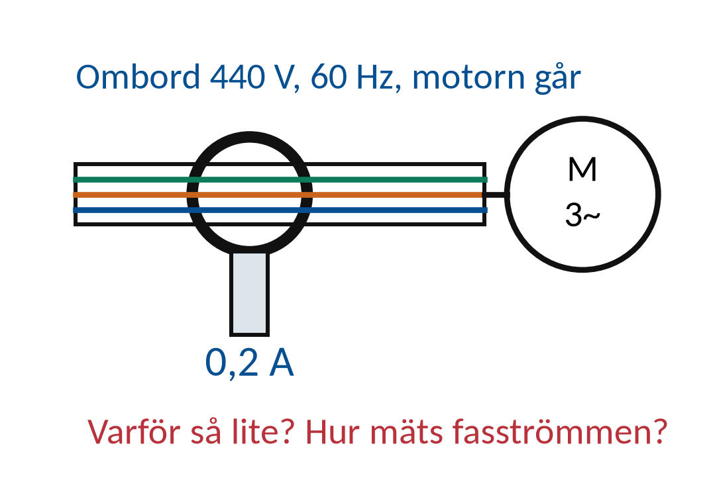
Ledtråd 1: vilken princip?
Utgå från I1 + I2 + I3 = 0 vid symmetri utan neutralledare. Läs Teori 6: Strömtången.
Ledtråd 2: hur börjar jag?
Tången visar summan av strömmarna genom käften. En hel kabel har alla tre fasledarna i käften. Använd summan av fasströmmarna från Del 1 och det du såg med hårnålen på tångstationen.
Ledtråd 3: steg för steg
1) Vad blir summan av tre fasströmmar till en motor utan neutralledare? 2) Varför är den inte exakt noll? 3) Var i kabeln kan en ledare mätas för sig? Samma sätt att resonera som med hårnålen: strömmar genom käften tar ut varandra.
Facit
Alla tre fasledarna går genom käften. Motorn har ingen neutralledare, så summan av fasströmmarna är nära noll. 0,2 A kan vara liten osymmetri eller läckström mot skyddsledaren. Fasströmmen mäts med tången runt en fasledare i taget, där ledarna går separat, och med instrumentet inom sin mätkategori.
Kontrollfrågor: har du förstått delen?
Svara på de tre frågorna innan du går vidare. Ditt första svar sparas och följer med i QR-koden på sidan Skicka resultat. Det är ingen poäng, det visar vad som behöver repeteras.
Klart med delen?
Vilken koppling visar dina mätvärden, och hur vet du det?
Gör klart ditt protokoll och lämna in det med veckans uppgifter senast söndag 11 oktober.
5 Labben
Labben kommer sist i veckan, när du har gått igenom del 1–3. Du använder samma metod som i övningarna: räkna först, läs av, jämför och förklara.
Veckans labbar Veckans inlämning
Källor och fortsatt läsning
Studieplanen YH03151, 18 september 2026 Laborationsunderlag och inköpsguide, 24 september 2026
Motorns märkskylt och dokumentation
Startarens kopplingsschema för vald modell
UNI-T UT210D: bruksanvisning för tångmätning